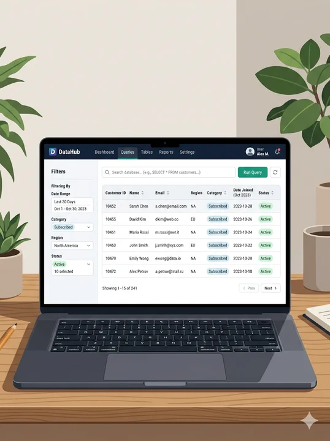
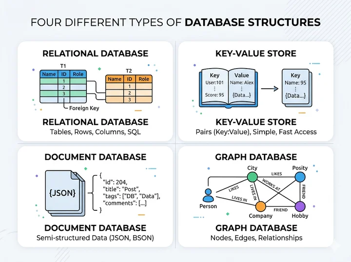
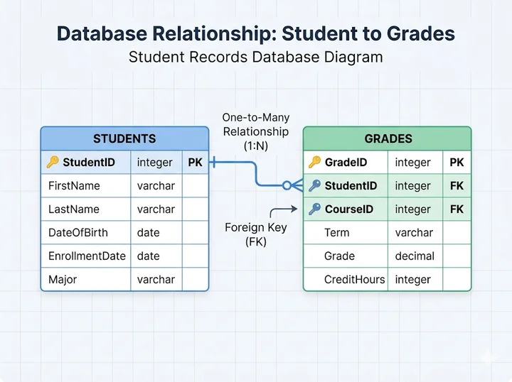
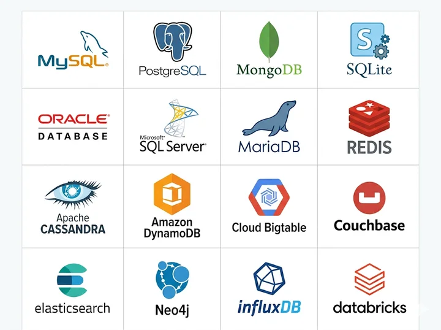

Perangkat Lunak untuk Mengelola Basis Data
Setelah mengikuti pembelajaran ini, kamu diharapkan mampu:
Kita sudah belajar bahwa basis data adalah kumpulan data yang tersimpan secara terstruktur. Tapi...
❓ Siapa yang mengatur, menyimpan, dan mengelola basis data itu?
Jawabannya: DBMS!
Basis data ibarat sebuah perpustakaan besar — dan DBMS adalah pustakawannya yang mengatur semua buku agar bisa dicari, dipinjam, dan dikembalikan dengan tertib.
DBMS (Database Management System) adalah perangkat lunak yang digunakan untuk membuat, mengelola, dan mengakses basis data secara terstruktur dan efisien.
Dengan DBMS, pengguna dan aplikasi tidak perlu tahu cara data disimpan secara teknis di dalam komputer — cukup minta data apa yang dibutuhkan, dan DBMS yang akan mengurusnya.
Singkatnya:
DBMS = "Perantara" antara pengguna dan data yang tersimpan.
DBMS menyimpan data secara terstruktur ke dalam tabel-tabel sehingga mudah diatur dan diakses kembali.
Pengguna bisa meminta data tertentu menggunakan perintah khusus. Contoh: "Tampilkan semua siswa kelas X-A." DBMS akan langsung mencari dan menampilkan hasilnya.
Data yang sudah tersimpan dapat diperbarui atau dihapus kapan saja melalui DBMS tanpa harus membuka file satu per satu.

DBMS mengatur siapa saja yang boleh melihat, mengubah, atau menghapus data sesuai perannya.
DBMS memastikan data yang sama tidak tersimpan berulang kali, sehingga basis data tetap bersih.
Jika terjadi kerusakan, DBMS mampu memulihkan data menggunakan sistem cadangan (backup).
| No | Fungsi | Manfaat |
|---|---|---|
| 1 | Menyimpan Data | Data tersimpan rapi dan terstruktur |
| 2 | Mengambil Data | Pencarian data cepat dan akurat |
| 3 | Mengubah/Menghapus Data | Data selalu up-to-date |
| 4 | Keamanan Data | Hanya pengguna berwenang yang bisa akses |
| 5 | Mencegah Duplikasi | Data tidak ganda / redundan |
| 6 | Backup & Recovery | Data aman meski terjadi kerusakan |
DBMS tidak hanya satu jenis — ada beberapa jenis DBMS untuk kebutuhan yang berbeda.

MySQL, PostgreSQL, Oracle
Sistem sekolah, bank, e-commerce

MongoDB
CouchDB
Firebase
Aplikasi mobile, media sosial, katalog produk e-commerce.
Menyimpan data dalam pasangan **kunci → nilai**, seperti kamus. Sangat cepat untuk pencarian data sederhana.
💡 Cocok Untuk:
Penyimpanan sesi login, cache aplikasi, keranjang belanja.
Contoh: Redis, Amazon DynamoDB
Menyimpan data sebagai **simpul (node) dan relasi (edge)**, seperti peta jaringan. Terbaik untuk hubungan kompleks.
💡 Cocok Untuk:
Jaringan pertemanan media sosial, peta jalan, rekomendasi produk.
Contoh: Neo4j, Amazon Neptune
| Jenis | Struktur Data | Software | Kecocokan |
|---|---|---|---|
| Relasional | Tabel | MySQL, PostgreSQL | Sistem sekolah, bank |
| Dokumen | JSON/XML | MongoDB, Firebase | Aplikasi mobile |
| Key-Value | Kunci → Nilai | Redis, DynamoDB | Cache, sesi login |
| Graf | Node & Edge | Neo4j | Media sosial, peta |
Mari kita kenali lebih dekat beberapa DBMS yang paling banyak digunakan di dunia nyata:

Berikut alur sederhana bagaimana DBMS bekerja saat kamu meminta data:
"DBMS bertindak sebagai penerjemah dan pengatur lalu lintas antara pengguna dan data."
Pengguna / Aplikasi
Meminta data spesifik
DBMS
Memproses & Mencari
Basis Data
Penyimpanan Terstruktur
Hasil Ditampilkan
Data sampai ke pengguna
| Fitur | Tanpa DBMS | Dengan DBMS |
|---|---|---|
| Penyimpanan | File terpisah (Excel, txt) | Terpusat dan terstruktur |
| Pencarian | Manual, lambat | Otomatis, cepat |
| Keamanan | Tidak ada kontrol akses | Hak akses teratur |
| Duplikasi Data | Sering terjadi | Kontrol otomatis |
| Banyak Pengguna | Sulit diakses bersama | Akses bersamaan |
| Pemulihan Data | Sulit / tidak bisa | Backup & Recovery |
DBMS adalah perangkat lunak untuk membuat, mengelola, dan mengakses basis data
Memiliki 6 fungsi utama: simpan, ambil, ubah data, keamanan, cegah duplikasi, & pemulihan
Ada 4 jenis DBMS: Relasional, Dokumen, Key-Value, dan Graf
RDBMS adalah jenis paling umum digunakan (MySQL, PostgreSQL)
DBMS bekerja sebagai perantara antara pengguna dan data
Apa kepanjangan dari DBMS dan apa fungsi utamanya?
DBMS = Database Management System, fungsi utamanya mengelola basis data.
Sebuah sekolah ingin menyimpan data siswa, nilai, dan absensi dalam satu sistem yang saling terhubung. Jenis DBMS yang paling tepat digunakan adalah...
RDBMS ideal untuk data terstruktur yang saling berelasi seperti data sekolah.
Di bawah ini yang BUKAN merupakan fungsi dari DBMS adalah...
Mengubah tampilan grafis adalah tugas framework/desain UI, bukan DBMS.
Silakan bertanya!
Terima kasih atas perhatiannya! 🎉